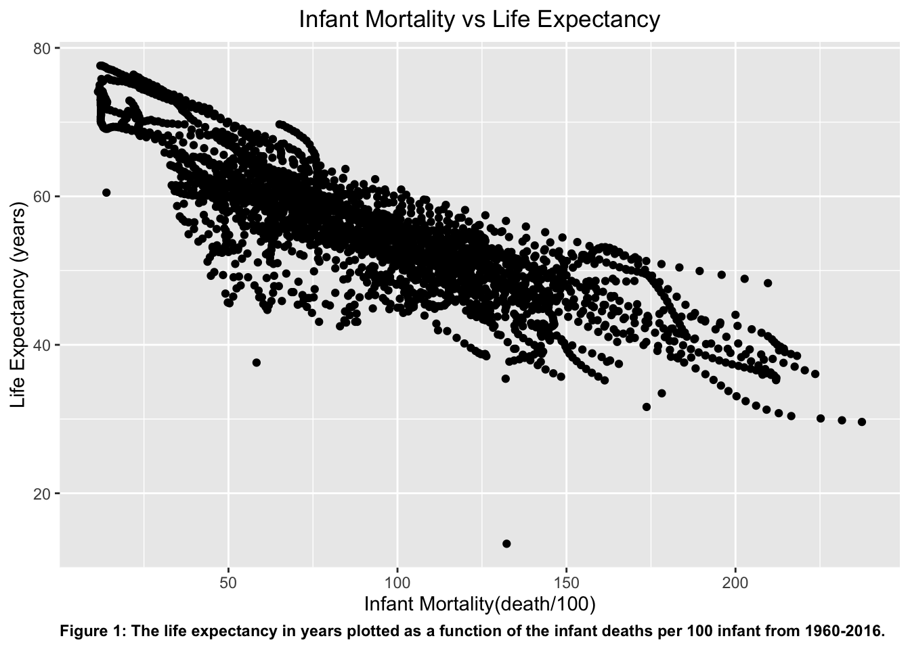
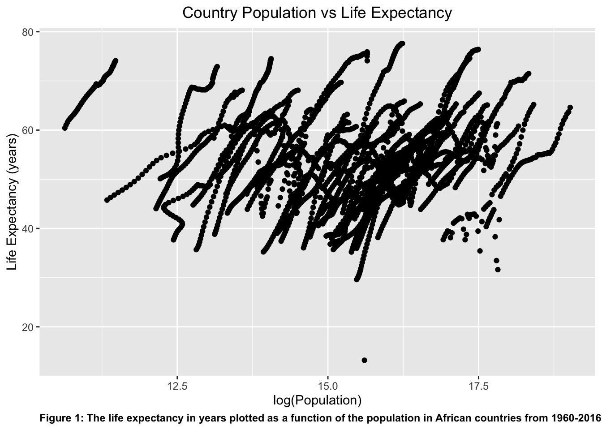
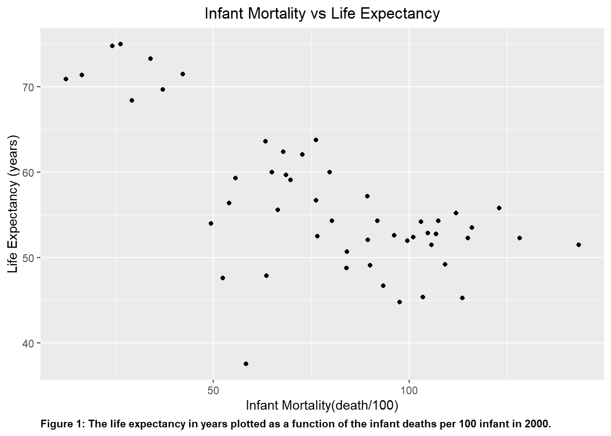
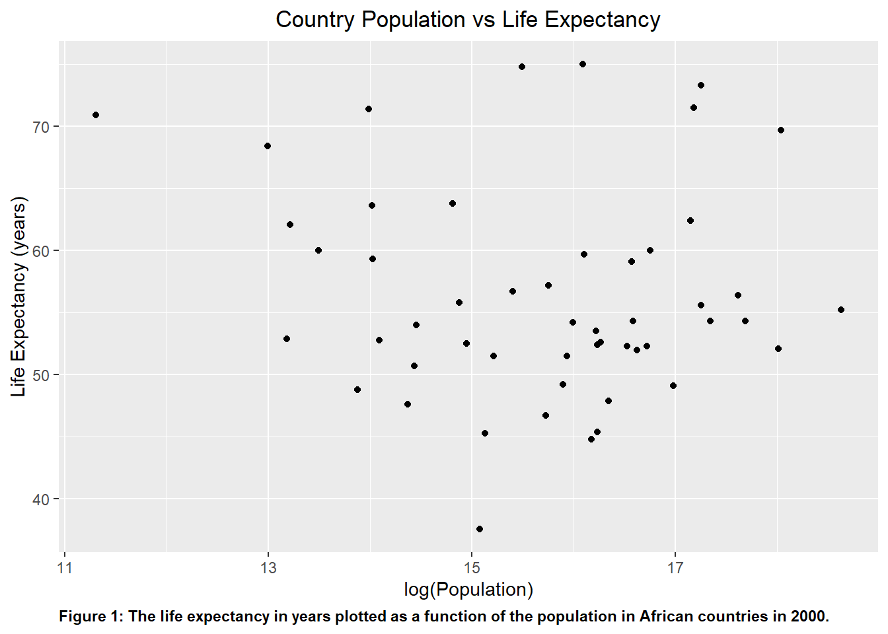
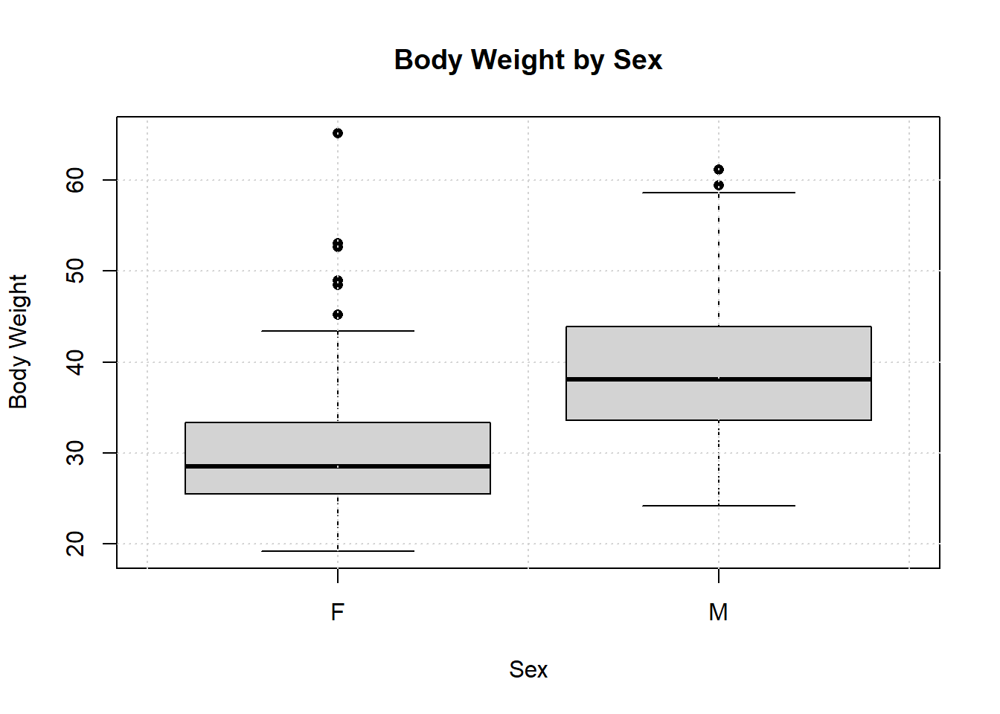
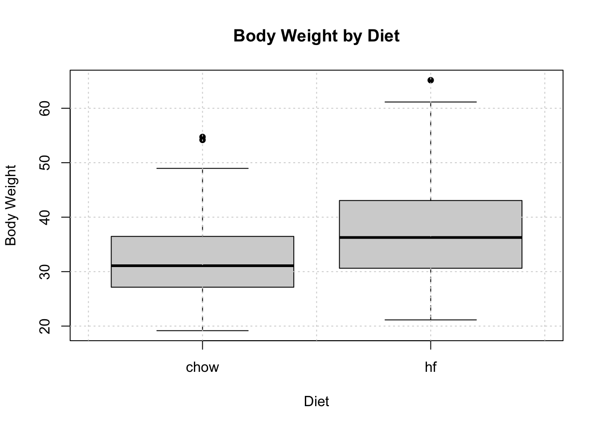

This section will be utilized to learn basic R coding skills
The following coding exercise will involve loading, viewing, processing, and visualizing the dataset provided with gapminder.
Loading and Checking Data
I usually start any script with installing and loading my required packages. The dslab package will be used provide our data set (gapminder) that will be analyzed below. The package renv which will be used to ensure reproducibility for a future date.
Often times, when I’m using a new or unfamiliar package, I type in ?name_of_package (e.g. ?tidyverse) to familiarize myself more with the package and its different commands (e.g. ?filter()).
#Installing and loading needed packages with the command install.packages() and the library() functionlibrary("dslabs")library(renv)library(tidyverse)#The help() function is used to look at data provided in 'gapminder'help(gapminder)#Check the summary and structure of the dataset 'gapminder'str(gapminder)
'data.frame': 10545 obs. of 9 variables:
$ country : Factor w/ 185 levels "Albania","Algeria",..: 1 2 3 4 5 6 7 8 9 10 ...
$ year : int 1960 1960 1960 1960 1960 1960 1960 1960 1960 1960 ...
$ infant_mortality: num 115.4 148.2 208 NA 59.9 ...
$ life_expectancy : num 62.9 47.5 36 63 65.4 ...
$ fertility : num 6.19 7.65 7.32 4.43 3.11 4.55 4.82 3.45 2.7 5.57 ...
$ population : num 1636054 11124892 5270844 54681 20619075 ...
$ gdp : num NA 1.38e+10 NA NA 1.08e+11 ...
$ continent : Factor w/ 5 levels "Africa","Americas",..: 4 1 1 2 2 3 2 5 4 3 ...
$ region : Factor w/ 22 levels "Australia and New Zealand",..: 19 11 10 2 15 21 2 1 22 21 ...
summary(gapminder)
country year infant_mortality life_expectancy
Albania : 57 Min. :1960 Min. : 1.50 Min. :13.20
Algeria : 57 1st Qu.:1974 1st Qu.: 16.00 1st Qu.:57.50
Angola : 57 Median :1988 Median : 41.50 Median :67.54
Antigua and Barbuda: 57 Mean :1988 Mean : 55.31 Mean :64.81
Argentina : 57 3rd Qu.:2002 3rd Qu.: 85.10 3rd Qu.:73.00
Armenia : 57 Max. :2016 Max. :276.90 Max. :83.90
(Other) :10203 NA's :1453
fertility population gdp continent
Min. :0.840 Min. :3.124e+04 Min. :4.040e+07 Africa :2907
1st Qu.:2.200 1st Qu.:1.333e+06 1st Qu.:1.846e+09 Americas:2052
Median :3.750 Median :5.009e+06 Median :7.794e+09 Asia :2679
Mean :4.084 Mean :2.701e+07 Mean :1.480e+11 Europe :2223
3rd Qu.:6.000 3rd Qu.:1.523e+07 3rd Qu.:5.540e+10 Oceania : 684
Max. :9.220 Max. :1.376e+09 Max. :1.174e+13
NA's :187 NA's :185 NA's :2972
region
Western Asia :1026
Eastern Africa : 912
Western Africa : 912
Caribbean : 741
South America : 684
Southern Europe: 684
(Other) :5586
#Determine the class type of gapminderclass(gapminder)
[1] "data.frame"
Processing Data
In the script shown below for processing the data, I used a few commands found in dplyr and magrittr, both of which could be found in tidyverse. As I was previously exposed to R, I was informed that indentation was important to provide clarity in the code.
#Assigning African countries in the dataset to newly created object 'africadata.' A pipe operator is used to pass the data set of 'gapminder' to the filter function call on the right of it.africadata <- gapminder %>%filter(continent =='Africa')#The filter() was used to filter out the rows of the data set where the continent is Africa only.#Running str() and summary() to determine structure and summary of the new objectstr(africadata)
'data.frame': 2907 obs. of 9 variables:
$ country : Factor w/ 185 levels "Albania","Algeria",..: 2 3 18 22 26 27 29 31 32 33 ...
$ year : int 1960 1960 1960 1960 1960 1960 1960 1960 1960 1960 ...
$ infant_mortality: num 148 208 187 116 161 ...
$ life_expectancy : num 47.5 36 38.3 50.3 35.2 ...
$ fertility : num 7.65 7.32 6.28 6.62 6.29 6.95 5.65 6.89 5.84 6.25 ...
$ population : num 11124892 5270844 2431620 524029 4829291 ...
$ gdp : num 1.38e+10 NA 6.22e+08 1.24e+08 5.97e+08 ...
$ continent : Factor w/ 5 levels "Africa","Americas",..: 1 1 1 1 1 1 1 1 1 1 ...
$ region : Factor w/ 22 levels "Australia and New Zealand",..: 11 10 20 17 20 5 10 20 10 10 ...
summary(africadata)
country year infant_mortality life_expectancy
Algeria : 57 Min. :1960 Min. : 11.40 Min. :13.20
Angola : 57 1st Qu.:1974 1st Qu.: 62.20 1st Qu.:48.23
Benin : 57 Median :1988 Median : 93.40 Median :53.98
Botswana : 57 Mean :1988 Mean : 95.12 Mean :54.38
Burkina Faso: 57 3rd Qu.:2002 3rd Qu.:124.70 3rd Qu.:60.10
Burundi : 57 Max. :2016 Max. :237.40 Max. :77.60
(Other) :2565 NA's :226
fertility population gdp continent
Min. :1.500 Min. : 41538 Min. :4.659e+07 Africa :2907
1st Qu.:5.160 1st Qu.: 1605232 1st Qu.:8.373e+08 Americas: 0
Median :6.160 Median : 5570982 Median :2.448e+09 Asia : 0
Mean :5.851 Mean : 12235961 Mean :9.346e+09 Europe : 0
3rd Qu.:6.860 3rd Qu.: 13888152 3rd Qu.:6.552e+09 Oceania : 0
Max. :8.450 Max. :182201962 Max. :1.935e+11
NA's :51 NA's :51 NA's :637
region
Eastern Africa :912
Western Africa :912
Middle Africa :456
Northern Africa :342
Southern Africa :285
Australia and New Zealand: 0
(Other) : 0
#Creating a new object representing the variables 'infant mortality' and 'life expectancy' in 'IM_LE.' The select() function is used to specify the columns of interest. IM_LE <-select(africadata, infant_mortality, life_expectancy)#Running str() and summary() to determine structure and summary of the new objectstr(IM_LE)
'data.frame': 2907 obs. of 2 variables:
$ infant_mortality: num 148 208 187 116 161 ...
$ life_expectancy : num 47.5 36 38.3 50.3 35.2 ...
summary(IM_LE)
infant_mortality life_expectancy
Min. : 11.40 Min. :13.20
1st Qu.: 62.20 1st Qu.:48.23
Median : 93.40 Median :53.98
Mean : 95.12 Mean :54.38
3rd Qu.:124.70 3rd Qu.:60.10
Max. :237.40 Max. :77.60
NA's :226
#Creating the object 'Pop_Le' to reflect the variables 'population' and 'life expectancy.'Pop_LE <-select(africadata, population, life_expectancy)#Running str() and summary() to determine structure and summary of the new objectstr(Pop_LE)
'data.frame': 2907 obs. of 2 variables:
$ population : num 11124892 5270844 2431620 524029 4829291 ...
$ life_expectancy: num 47.5 36 38.3 50.3 35.2 ...
summary(Pop_LE)
population life_expectancy
Min. : 41538 Min. :13.20
1st Qu.: 1605232 1st Qu.:48.23
Median : 5570982 Median :53.98
Mean : 12235961 Mean :54.38
3rd Qu.: 13888152 3rd Qu.:60.10
Max. :182201962 Max. :77.60
NA's :51
Plotting
In the following script, I used the package ggplot2, which is also found in tidyverse. I initially based the script off of the plots we’ve previously made and followed that syntax, but I wanted to add more details and visuals to the plot.
I then saw on a stack overflow page that there is a function that can be used to list the structure of functions in a specified environment (e.g. lsf.str(ggplot2)). That, however, listed a huge and overwhelmingly large list, so I settled with googling different ways to adjust the visual of the plot using ggplot().
Note
Just a great source to visually see the commands already rendered for ggplot2:
#Using the package ggplot2 (which is found in tidyverse) to create a scatter plot using the variables in the object 'IM_LE' and assigning it to the variable 'p1'p1 <-ggplot(IM_LE, aes(x = infant_mortality, y = life_expectancy))+geom_point()+ggtitle('Infant Mortality vs Life Expectancy')+theme(plot.title=element_text(hjust=0.5))+xlab('Infant Mortality(death/100)')+ylab('Life Expectancy (years)')+labs(caption ="Figure 1: The life expectancy in years plotted as a function of the infant deaths per 100 infant from 1960-2016.")+theme(plot.caption =element_text(hjust=0, face="bold"))#The theme() function was a great way to manipulate the specific element in the plot, whether it was color, size, or orientation of the text or visuals.#Using the plot() function to determine if the plot was properly createdplot(p1)

#Repeating the previous step(s) to plot Pop_LE into the object 'p2'. The data is heavily clustered together due to the immense magnitude of the population, so the population axis was scaled by taking the logarithm of it.p2 <-ggplot(Pop_LE, aes(x =log(population), y = life_expectancy))+geom_point()+ggtitle('Country Population vs Life Expectancy')+theme(plot.title=element_text(hjust=0.5))+xlab('log(Population)')+ylab('Life Expectancy (years)')+labs(caption ="Figure 1: The life expectancy in years plotted as a function of the population in African countries from 1960-2016.")+theme(plot.caption =element_text(hjust=0, face="bold"))#Using the plot() function to determine if the plot was properly createdplot(p2)

The plots shown above shows a negative correlation between infant mortality and life expectancy. The second plot shows a positive correlation between population size and life expectancy, showing that people tend to live longer as the population grows.
The “streaks” of data that is shown in the plot can be explained by the continuous collection of data from certain locations over the span of several years. As indicated in plot p2, a countries’ population tend to increase over time.
More Data Processing
I had to search how to use the filter() function to exclude any categories that had data, and I found the solution in the R for Health Data Science website.
This also showed me how to filter out any rows that had any missing data set with an example shown below:
'data.frame': 2856 obs. of 2 variables:
$ year : int 1960 1960 1960 1960 1960 1960 1960 1960 1960 1960 ...
$ fertility: num 7.65 7.32 6.28 6.62 6.29 6.95 5.65 6.89 5.84 6.25 ...
summary(Random_example)
year fertility
Min. :1960 Min. :1.500
1st Qu.:1974 1st Qu.:5.160
Median :1988 Median :6.160
Mean :1988 Mean :5.851
3rd Qu.:2001 3rd Qu.:6.860
Max. :2015 Max. :8.450
The following script is used to show the different years that have missing data for infant mortality.
#Filtering the data set to only include the years with missing data points for 'infant_mortality' in 'africadata' using the select() and filter() function. The 'is.na()' function allows you to filter out and identify missing or not available data. inf_missing_data <- africadata %>%select(year, infant_mortality)%>%filter(is.na(infant_mortality))#Using str() and summary() function to determine if I filtered the dataset currently. I also used view() to visually see the object 'inf_missing_data'str(inf_missing_data)
'data.frame': 226 obs. of 2 variables:
$ year : int 1960 1960 1960 1960 1960 1960 1960 1960 1960 1960 ...
$ infant_mortality: num NA NA NA NA NA NA NA NA NA NA ...
summary(inf_missing_data)
year infant_mortality
Min. :1960 Min. : NA
1st Qu.:1963 1st Qu.: NA
Median :1968 Median : NA
Mean :1978 Mean :NaN
3rd Qu.:1978 3rd Qu.: NA
Max. :2016 Max. : NA
NA's :226
#Creating a new object that consist of data for the year 2000year2000 <- africadata %>%filter(year =='2000')#Using str() and summary() function to determine if I filtered the data set currently.str(year2000)
'data.frame': 51 obs. of 9 variables:
$ country : Factor w/ 185 levels "Albania","Algeria",..: 2 3 18 22 26 27 29 31 32 33 ...
$ year : int 2000 2000 2000 2000 2000 2000 2000 2000 2000 2000 ...
$ infant_mortality: num 33.9 128.3 89.3 52.4 96.2 ...
$ life_expectancy : num 73.3 52.3 57.2 47.6 52.6 46.7 54.3 68.4 45.3 51.5 ...
$ fertility : num 2.51 6.84 5.98 3.41 6.59 7.06 5.62 3.7 5.45 7.35 ...
$ population : num 31183658 15058638 6949366 1736579 11607944 ...
$ gdp : num 5.48e+10 9.13e+09 2.25e+09 5.63e+09 2.61e+09 ...
$ continent : Factor w/ 5 levels "Africa","Americas",..: 1 1 1 1 1 1 1 1 1 1 ...
$ region : Factor w/ 22 levels "Australia and New Zealand",..: 11 10 20 17 20 5 10 20 10 10 ...
summary(year2000)
country year infant_mortality life_expectancy
Algeria : 1 Min. :2000 Min. : 12.30 Min. :37.60
Angola : 1 1st Qu.:2000 1st Qu.: 60.80 1st Qu.:51.75
Benin : 1 Median :2000 Median : 80.30 Median :54.30
Botswana : 1 Mean :2000 Mean : 78.93 Mean :56.36
Burkina Faso: 1 3rd Qu.:2000 3rd Qu.:103.30 3rd Qu.:60.00
Burundi : 1 Max. :2000 Max. :143.30 Max. :75.00
(Other) :45
fertility population gdp continent
Min. :1.990 Min. : 81154 Min. :2.019e+08 Africa :51
1st Qu.:4.150 1st Qu.: 2304687 1st Qu.:1.274e+09 Americas: 0
Median :5.550 Median : 8799165 Median :3.238e+09 Asia : 0
Mean :5.156 Mean : 15659800 Mean :1.155e+10 Europe : 0
3rd Qu.:5.960 3rd Qu.: 17391242 3rd Qu.:8.654e+09 Oceania : 0
Max. :7.730 Max. :122876723 Max. :1.329e+11
region
Eastern Africa :16
Western Africa :16
Middle Africa : 8
Northern Africa : 6
Southern Africa : 5
Australia and New Zealand: 0
(Other) : 0
There are 226 missing data point for infant mortality between 1960-2016. In the year 2000, there are 51 observations over 9 different variables.
More Plotting
#Using the package ggplot2 to plot Life expectancy vs infant mortality for the year 2000 in 'p3' p3 <-ggplot(year2000, aes(x = infant_mortality, y = life_expectancy))+geom_point()+geom_smooth(method ="lm")+ggtitle('Infant Mortality vs Life Expectancy')+theme(plot.title=element_text(hjust=0.5))+xlab('Infant Mortality(death/100)')+ylab('Life Expectancy (years)')+labs(caption ="Figure 1: The life expectancy in years plotted as a function of the infant deaths per 100 infant in 2000.")+theme(plot.caption =element_text(hjust=0, face="bold"))#Using the plot() function to determine if the plot was properly createdplot(p3)

#Repeating the previous step(s) to plot 'year2000' into the object 'p4'. Once again, the log(population) is used to scale and visualize trend with more clarity.p4 <-ggplot(year2000, aes(x =log(population), y = life_expectancy))+geom_point()+geom_smooth(method ="lm")+ggtitle('Country Population vs Life Expectancy')+theme(plot.title=element_text(hjust=0.5))+xlab('log(Population)')+ylab('Life Expectancy (years)')+labs(caption ="Figure 1: The life expectancy in years plotted as a function of the population in African countries in 2000.")+theme(plot.caption =element_text(hjust=0, face="bold"))#Using the plot() function to determine if the plot was properly createdplot(p4)

Based on visually observing the plots, plot p3 shows similar trend as p1 with negative correlation between infant mortality and life expectancy. However, in p4, the plot showed no noticeable correlation, which contrasts greatly with plot p2.
Simple Model Fits
The script shown below fits a linear model to the data frame year2000. The models sets the variables plotted above as its outcome and predictor.
I used the same syntax and format that was shared and used for the previous assignment for the lm() function.
#Fitting the data set to a linear model with 'life expectancy' as the outcome and 'infant mortality' as the predictorlmfit1 <-lm(life_expectancy ~ infant_mortality, year2000)#Use the summary() command to check over the fit summary(lmfit1)
Call:
lm(formula = life_expectancy ~ infant_mortality, data = year2000)
Residuals:
Min 1Q Median 3Q Max
-22.6651 -3.7087 0.9914 4.0408 8.6817
Coefficients:
Estimate Std. Error t value Pr(>|t|)
(Intercept) 71.29331 2.42611 29.386 < 2e-16 ***
infant_mortality -0.18916 0.02869 -6.594 2.83e-08 ***
---
Signif. codes: 0 '***' 0.001 '**' 0.01 '*' 0.05 '.' 0.1 ' ' 1
Residual standard error: 6.221 on 49 degrees of freedom
Multiple R-squared: 0.4701, Adjusted R-squared: 0.4593
F-statistic: 43.48 on 1 and 49 DF, p-value: 2.826e-08
#Fitting the data set to a linear model with 'life expectancy' as the outcome and 'population' as the predictorlmfit2 <-lm(life_expectancy ~ population, year2000)#Use the summary() command to check over the fit summary(lmfit2)
Call:
lm(formula = life_expectancy ~ population, data = year2000)
Residuals:
Min 1Q Median 3Q Max
-18.429 -4.602 -2.568 3.800 18.802
Coefficients:
Estimate Std. Error t value Pr(>|t|)
(Intercept) 5.593e+01 1.468e+00 38.097 <2e-16 ***
population 2.756e-08 5.459e-08 0.505 0.616
---
Signif. codes: 0 '***' 0.001 '**' 0.01 '*' 0.05 '.' 0.1 ' ' 1
Residual standard error: 8.524 on 49 degrees of freedom
Multiple R-squared: 0.005176, Adjusted R-squared: -0.01513
F-statistic: 0.2549 on 1 and 49 DF, p-value: 0.6159
Based on analysis performed above, lmfit1 appears to be the better model. The p-value of the first model is extremely small, showing that the infant mortality is a significant predictor for the model. In the second model, the opposite is the case where its p-value > 0.05, proving it to be statistically insignificant.
#This Section contributed by Mutsa Nyamuranga
We will be looking at the mice_weights data set in the dslabs package.
body_weight bone_density percent_fat sex diet gen
Min. :19.16 Min. :0.2708 Min. : 2.595 F:224 chow:246 4 : 50
1st Qu.:27.94 1st Qu.:0.5016 1st Qu.: 5.654 M:218 hf :196 7 : 98
Median :33.36 Median :0.5769 Median : 8.048 8 : 97
Mean :34.37 Mean :0.5792 Mean : 8.486 9 : 97
3rd Qu.:39.43 3rd Qu.:0.6463 3rd Qu.:10.647 11:100
Max. :65.15 Max. :0.9679 Max. :22.154
NA's :1 NA's :1
litter
1:442
2: 0
I want to further analyze the relationships that sex and diet have with body weight in this filtered data. I will be creating two objects to further analyze: xxxx and xxxx.
# Create a new object with sex and body_weightsexWeight <- firstlitter[, c("sex", "body_weight")]# Create a new object with diet and body_weightdietWeight <- firstlitter[, c("diet", "body_weight")]str(dietWeight)
sex body_weight
F:224 Min. :19.16
M:218 1st Qu.:27.94
Median :33.36
Mean :34.37
3rd Qu.:39.43
Max. :65.15
Now we plot these new objects using scatter plots to see the distribution of body weights according to sex and diet.
# Plot body weight as a function of sexplot(sexWeight$sex, sexWeight$body_weight,main ="Body Weight by Sex",xlab ="Sex",ylab ="Body Weight",pch =16) # Set the point type to a solid circle# Add grid linesgrid()

# Plot body weight as a function of dietplot(dietWeight$diet, dietWeight$body_weight,main ="Body Weight by Diet",xlab ="Diet",ylab ="Body Weight",pch =16) # Set the point type to a solid circle# Add grid linesgrid()

#Simple Linear Regression Models To analyze the effects of sex and diet on body weight, I used a simple regression model to test that there is a significant difference in the the mean body weight mice in the first litter.
# Fit linear regression with life expectancy as the outcome and infant mortality as the predictorSimpleSex <-lm(body_weight ~ sex, data = firstlitter)# Fit linear regression with life expectancy as the outcome and population size (log scale) as the predictorSimpleDiet <-lm(body_weight ~ diet, data = firstlitter)# Print summary for fit1summary(SimpleSex)
Call:
lm(formula = body_weight ~ sex, data = firstlitter)
Residuals:
Min 1Q Median 3Q Max
-14.846 -4.886 -1.208 4.147 35.317
Coefficients:
Estimate Std. Error t value Pr(>|t|)
(Intercept) 29.8328 0.4578 65.16 <2e-16 ***
sexM 9.2033 0.6519 14.12 <2e-16 ***
---
Signif. codes: 0 '***' 0.001 '**' 0.01 '*' 0.05 '.' 0.1 ' ' 1
Residual standard error: 6.852 on 440 degrees of freedom
Multiple R-squared: 0.3117, Adjusted R-squared: 0.3102
F-statistic: 199.3 on 1 and 440 DF, p-value: < 2.2e-16
# Print summary for fit2summary(SimpleDiet)
Call:
lm(formula = body_weight ~ diet, data = firstlitter)
Residuals:
Min 1Q Median 3Q Max
-16.019 -5.758 -1.040 4.746 27.991
Coefficients:
Estimate Std. Error t value Pr(>|t|)
(Intercept) 32.1512 0.5020 64.040 < 2e-16 ***
diethf 5.0080 0.7539 6.643 9.12e-11 ***
---
Signif. codes: 0 '***' 0.001 '**' 0.01 '*' 0.05 '.' 0.1 ' ' 1
Residual standard error: 7.874 on 440 degrees of freedom
Multiple R-squared: 0.09114, Adjusted R-squared: 0.08907
F-statistic: 44.12 on 1 and 440 DF, p-value: 9.124e-11
#Visualization fo the simple linear regression models Using the visreg and ggplot2 packages, I adding plots to display relationship of the data based on each catagorical variable. The fitted model is used to predict values of the response variable, across the range of the chosen explanatory variable. The other variables are set to their median value (for numeric variables) or most frequent category (for categorical variables).
#Plot of Sex vs. Body Weight and Diet vs. Body Weight# Set default CRAN mirror non-interactivelylocal({ r <-getOption("repos") r["CRAN"] <-"http://cran.us.r-project.org"options(repos = r)})# Now install the 'visreg' package or any other packages you needinstall.packages("visreg")
The downloaded binary packages are in
/var/folders/hj/hr23c97s45s6qm_wn3ywdf300000gn/T//RtmpuDQEYB/downloaded_packages
##Sex vs. Body Weight For the first model, we analyzed the relationship sex on the mean body weights of mice in the first litter. With p<.05, we can reject the null hypothesis that there is no difference in the body weights of male and female mice. From the output, we can conclude that the mean body weight for male mice is 9.2 grams greater than female mice.
##Diet vs. Body Weight For the first model, we analyzed the relationship diet on the mean body weights of mice in the first litter. With p<.05, we can reject the null hypothesis that there is no difference in the body weights of mice that ate chow and mice with a high fat diet. From the output, we can conclude that the mean body weight for mice with a high fat diet is 5.00 grams greater than mice that ate chow.